A free case from Ashcombe Manor
The answer: A Friday at Ashcombe
Seven o'clock on a Friday, and the gates of Ashcombe Manor were locked. Miss Pell dealt the cards in silence, the lamps went out for one minute, and when they came back on, Sam lay in the Study.
Step by step
Every deduction, in order
-
1. Clue 1 settles it: Agatha is at R2C1.
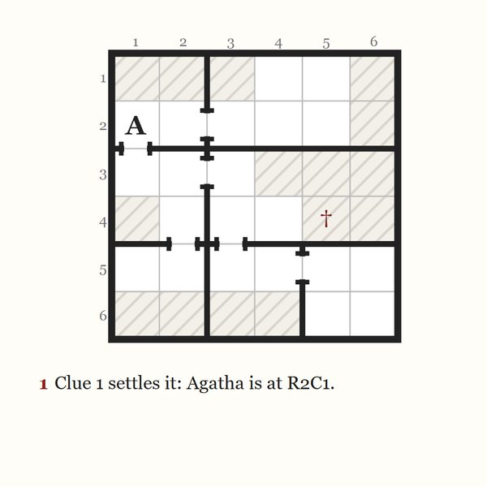
-
2. Clue 2: Douglas must be somewhere in row 5.
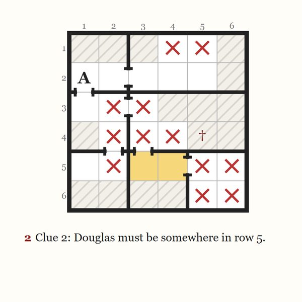
-
3. Clue 3: Nora must be in the Conservatory.
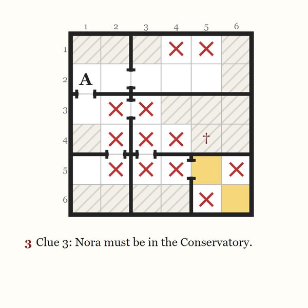
-
4. Clue 4: Jack must be somewhere in row 3.
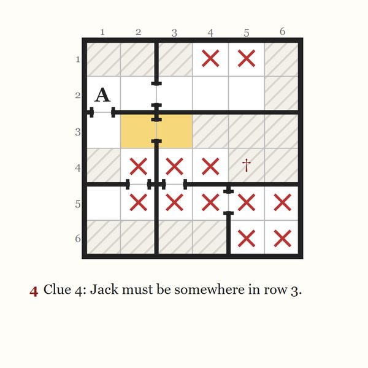
-
5. Clue 5: Clara has 13 squares left.
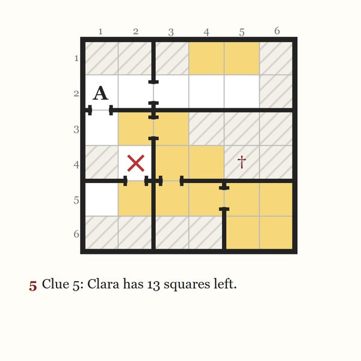
-
6. Clue 6: Edith must be at R1C4 or R1C5 or R4C4.
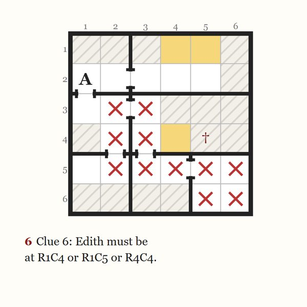
-
7. Clue 7 settles it: Douglas is at R5C4.
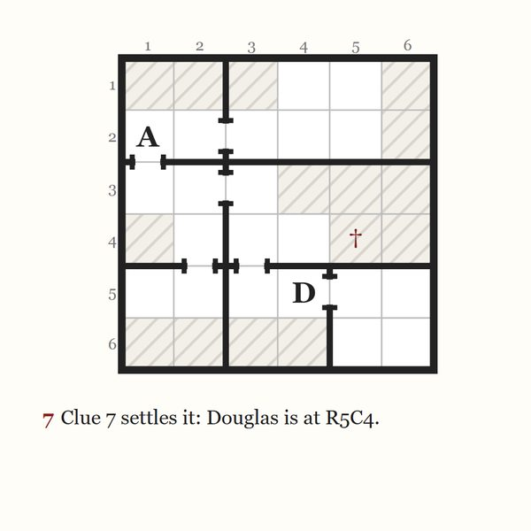
-
8. Edith has only one square left: R1C5.
-
9. Nora has only one square left: R6C6.
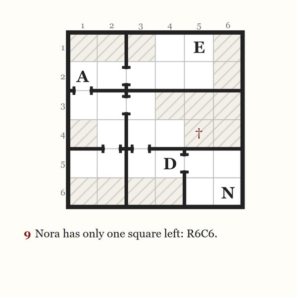
-
10. Clara is the only suspect who can still stand in row 4, so she must be somewhere in it.
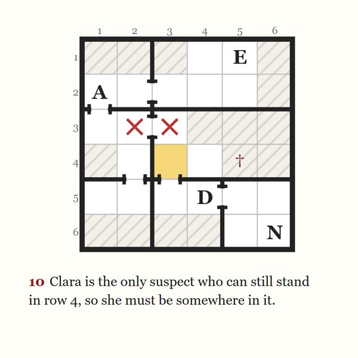
-
11. Clara has only one square left: R4C3.
-
12. Only one square is left for Jack, so Jack is at R3C2.
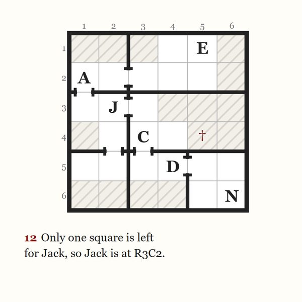
Who did it?
With the grid full, only Clara was in the Study with Sam. Clara is the murderer.
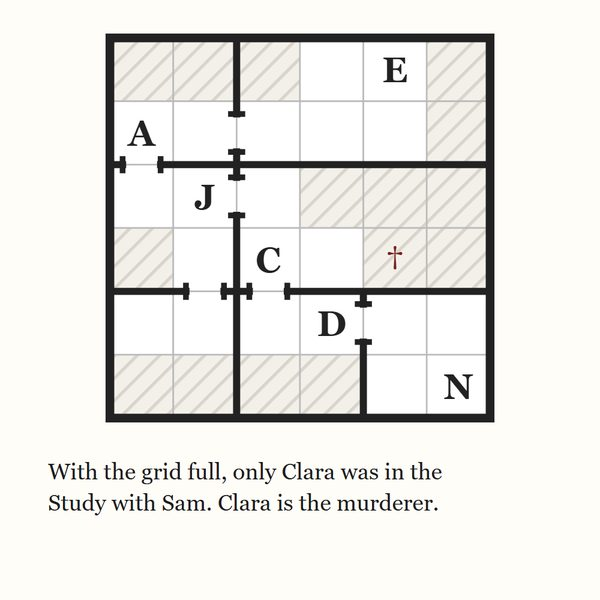
When one case is not enough
More murder mysteries from Ashcombe Manor
-


New for Halloween
Murder in the Dark
Twenty murder mysteries from one Halloween night at Ashcombe Manor, every suspect in costume.
20 cases · Gentle to hard · PDF
-
Whereabouts: Murder Sudoku
The book: fifty murder mysteries from Ashcombe Manor, with three levels of hints for every case and every answer step by step.
50 cases · Gentle to expert
-


The Beginner's Casebook
Twelve new cases to start with, six gentle and six standard.
12 cases · Gentle to standard · PDF
-


The Expert's Casebook
Twelve new hard and expert cases, for solvers who want a long evening.
12 cases · Hard to expert · PDF